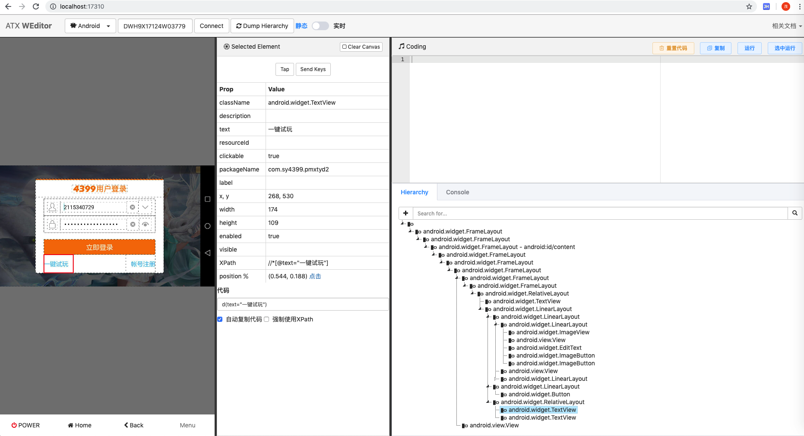

屏幕
此处整理和屏幕相关操作
点击（屏幕 坐标）
self.driver.click(x, y)
长按
self.driver.long_click(x,y,duration=1.5)
滑动
# 等待时间
SwipDuration_Android = 0.3
SwipeDirectionBounds = [338, 333, 38, 333]
curSession.swipe(SwipeDirectionBounds[0], SwipeDirectionBounds[1], SwipeDirectionBounds[2], SwipeDirectionBounds[3], SwipDuration_Android)
self.driver.swipe(SwipeDirectionBounds[0], SwipeDirectionBounds[1], SwipeDirectionBounds[2], SwipeDirectionBounds[3], SwipDuration_Android)
（从当前屏幕）返回上一页
self.driver.press("back")
（屏幕）坐标值
boundsToCenterPoint：从bounds算出中间坐标值
def boundsToCenterPoint(self, boundsStr):
"""
从bounds转换出中间点位置坐标
Example：
bounds: '[156,1522][912,2027]'
return: [534, 1774]
"""
filterStr = re.sub('\[|,|\]', " ", boundsStr)
boundStrList = filterStr.split()
boundMap = map(int, boundStrList)
boundIntList = list(boundMap)
x0 = boundIntList[0]
y0 = boundIntList[1]
x1 = boundIntList[2]
y1 = boundIntList[3]
centerPoint = [(x1 + x0)//2,(y1 + y0)//2]
return centerPoint
调用：
centerPoint = self.boundsToCenterPoint(locatorBounds)
self.tap(centerPoint)
当前屏幕
针对于当前屏幕，最常见的几个动作是：
- 截图=截屏
- 获取(当前)页面源码(xml)
给当前屏幕截图
核心代码：
fullImgFilePath = self.driver.screenshot(fullImgFilePath)
举例：
fullImgFilePath = 'debug/GameScreenshot/20191209_171115.png'
fullImgFilePath = self.driver.screenshot(fullImgFilePath)
getCurPageSource：获取当前屏幕画面对应的xml源码
函数：
def getCurPageSource(self):
# curPageSrcXml = self.driver.dump_hierarchy()
curPageSrcXml = self.driver.dump_hierarchy(compressed=False, pretty=False)
# output, exitCode = self.driver.shell(["adb", "shell", "uiautomator", "dump"])
# output, exitCode = self.driver.shell(["uiautomator", "dump"])
# output, exitCode = self.driver.shell("uiautomator dump")
# output, exitCode = self.driver.shell(["shell", "uiautomator", "dump"])
# curPageSrcXml = output
return curPageSrcXml
调用：
curPageSrcXml = self.getCurPageSource()
举例：
对于下图中左边的登录界面：

用：
page_source = self.driver.dump_hierarchy(compressed=False, pretty=False)
导出的源码是：
<?xml version=1.0 encoding=UTF-8 standalone=yes ?>
<hierarchy rotation="1">
<node index="0" text="" resource-id="" class="android.widget.FrameLayout" package="com.sy4399.pmxtyd2" content-desc="" checkable="false" checked="false" clickable="false" enabled="true" focusable="false" focused="false" scrollable="false" long-clickable="false" password="false" selected="false" bounds="[0,0][1196,720]">
...
<node NAF="true" index="4" text="" resource-id="" class="android.widget.ToggleButton" package="com.sy4399.pmxtyd2" content-desc="" checkable="true" checked="false" clickable="true" enabled="true" focusable="true" focused="false" scrollable="false" long-clickable="false" password="false" selected="false" bounds="[834,314][906,386]" />
</node>
</node>
<node index="1" text="" resource-id="" class="android.widget.LinearLayout" package="com.sy4399.pmxtyd2" content-desc="" checkable="false" checked="false" clickable="false" enabled="true" focusable="false" focused="false" scrollable="false" long-clickable="false" password="false" selected="false" bounds="[268,440][928,530]">
<node index="0" text="立即登录" resource-id="" class="android.widget.Button" package="com.sy4399.pmxtyd2" content-desc="" checkable="false" checked="false" clickable="true" enabled="true" focusable="true" focused="false" scrollable="false" long-clickable="true" password="false" selected="false" bounds="[268,440][928,530]" />
</node>
...
</node>
</node>
</node>
</node>
</node>
<node index="1" text="" resource-id="" class="android.view.View" package="com.sy4399.pmxtyd2" content-desc="" checkable="false" checked="false" clickable="false" enabled="true" focusable="false" focused="false" scrollable="false" long-clickable="false" password="false" selected="false" bounds="[218,80][978,86]" />
</node>
</node>
</node>
</node>
</node>
</node>
</hierarchy>